Image Generation
A noisy input is a straight-line mix of Gaussian noise ε and the clean image
x1, xt = (1−t)ε + t·x1.
At t = 0 it's pure noise and at t = 1 it's the clean image. I sampled one noise tensor
with seed 180 and reused it at all three times, so Sections 1.2 to 1.5 all start from
the same inputs.
def interpolate(image, noise, t):
xt = (1-t)*noise + t*image
return xtt = 1
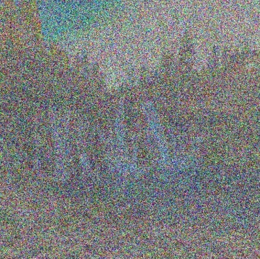
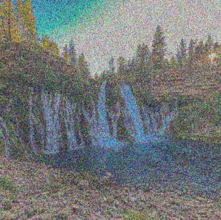
At t = 0.25 only the sky and the pale falls show through. By t = 0.75 the photo is clear with light grain, mostly visible in the sky and water.
As a baseline without a learned model, each input is divided by t to restore the image brightness and then Gaussian blurred. The notebook tries σ = 1, 2, 4, 8 and 16 and keeps the one with the lowest error against the clean photo.
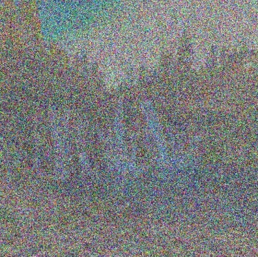
t = 0.25
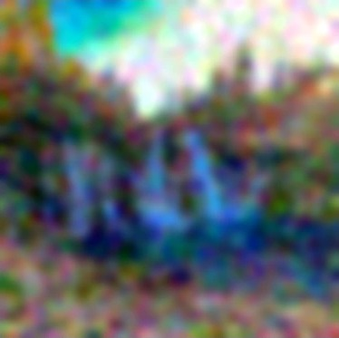
σ = 8
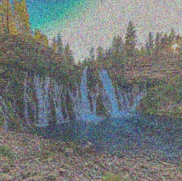
t = 0.50
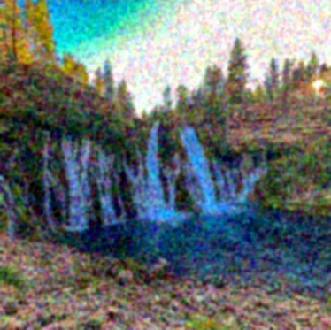
σ = 2
t = 0.75
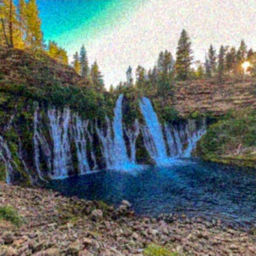
σ = 1
The best σ grows as t drops. Dividing by t also scales the noise up, so at low t the noise is so strong that the best trade is to blur almost everything away. At t = 0.25 the result is just a pale sky blob over a dark mass. A blur can't tell noise from real texture, so the thin streams and rocks disappear along with the grain.
The model predicts a velocity vθ(xt, t, c) that points toward
the clean image. Taking one full step to t = 1 gives an estimate
x̂1 = xt + (1−t)vθ. The
prompt here is "a high quality photo".
def one_step_denoise(x, t, condition, predict_velocity):
v = predict_velocity(x, t, condition)
x1_hat = x + (1-t)*v
return x1_hat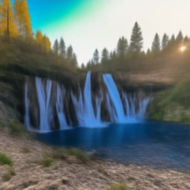
from t = 0.25
from t = 0.50
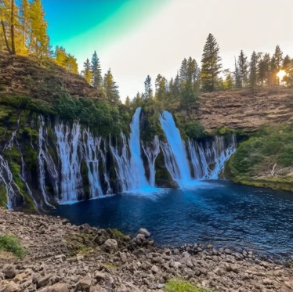
from t = 0.75
Even from t = 0.25 the model returns a clean waterfall with the right layout, where the blur only gave a color blob. The model knows what natural photos look like, so it keeps edges and objects. But the detail is invented and soft, with fewer streams, generic trees and smeared rocks. Many sharp photos match the same noisy input, and one step lands on their average, which is blurry. From t = 0.75 it's nearly identical to the original.
Since I know the noise, the update that would exactly recover the photo is
(1−t)(x1 − ε) = x1 − xt.
I compare it with the model's update (1−t)v̂. Updates use one shared signed
scale where gray is 0. The error is the RMS over RGB at each pixel, on one shared color
scale for all three times.
vt_hat = predict_velocity(x_t, t, condition)
v_gt = clean_image - epsilon
predicted_update = (1-t)*vt_hat
target_update = (1-t)*v_gt
error_map = ((predicted_update - target_update)**2).mean(dim=1).sqrt()t = 0.25
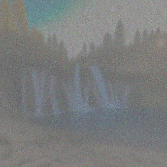
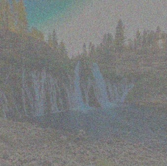
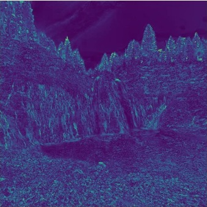
t = 0.50
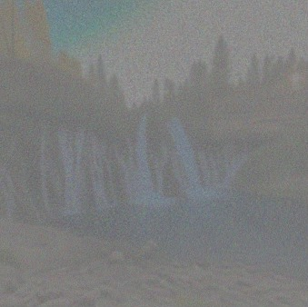
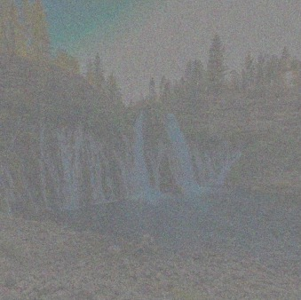
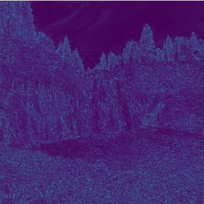
t = 0.75
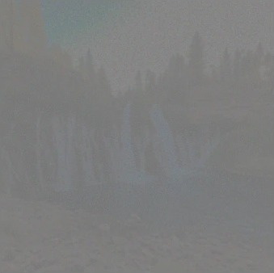
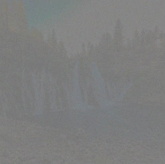
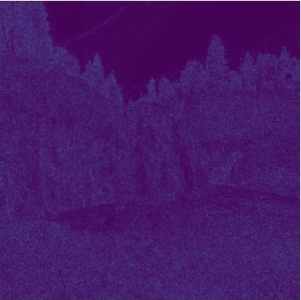
The predicted update has the same layout as the true one but is much smoother. The true update also contains the exact noise pattern to subtract, which the model can't know, so it predicts the average update instead. Both fade toward gray as t grows because there is less left to remove. The error is highest on the tree line, the falls and the rocks, and lowest in the smooth sky and water. It drops a lot from t = 0.25 to 0.75. This is why the one-step results in 1.3 are soft.
Instead of one big step, Euler sampling takes many small ones,
xt+h = xt + h·v(xt, t), recomputing
the velocity each time. With h = 0.02, starting at t = 0.50 takes 25 steps. The last
step is shortened if needed so it ends exactly at t = 1.
@torch.inference_mode()
def euler_sample(x_start, t_start, step_size, velocity):
t = t_start
x_th = x_start
states = [(t, x_th)]
while t < 1:
h = min(step_size, 1-t)
x_th = x_th + h * velocity(x_th, t)
t += h
states.append((t, x_th))
return x_th, states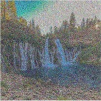
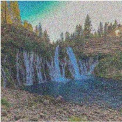
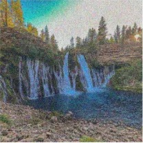
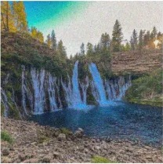
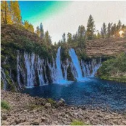
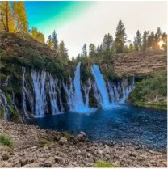
σ = 2
The grain fades gradually, and the last few steps mostly sharpen texture and color. Euler is clearly the sharpest of the three, with real detail in the thin streams, rocks and trees. Each step only moves a little and then asks the model again on a cleaner image, so the model can commit to specific detail instead of averaging over every possibility like the one-step estimate.
Starting from pure noise at t = 0 and running all 50 Euler steps generates a new image. These use "a high quality photo" with seeds 180 to 184.
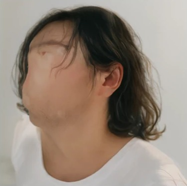
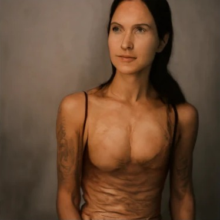
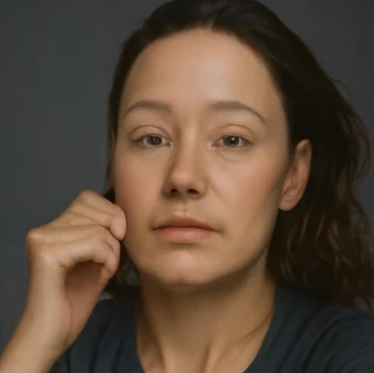
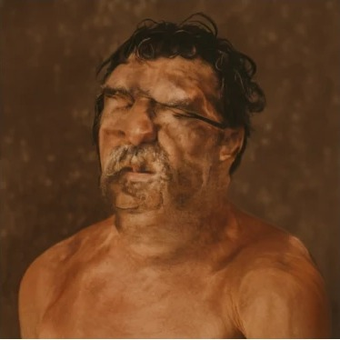
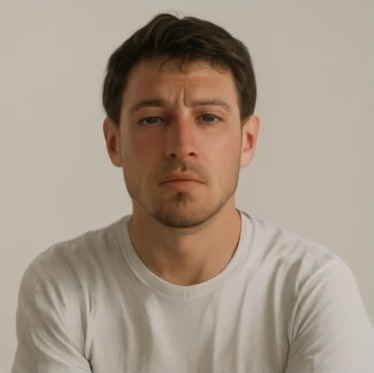
All five are portraits of people, even though the prompt never mentions a person. A generic prompt gives the model little to go on, so it falls back on the most common kind of photo it was trained on. Quality is uneven. Seeds 182 and 184 look natural, but 180 has a smoothed-over face and 181 and 183 have warped skin and anatomy.
CFG runs the model twice per step, once with the prompt and once with an empty prompt,
and pushes past the conditional prediction,
vcfg = vc + w(vc − vu).
At w = 0 it's the plain conditional velocity. I used w = 7 and the same five noises as
1.6.
def cfg_velocity(x, t, condition, w, predict_velocity, null_condition=''):
v_c = predict_velocity(x, t, condition)
v_u = predict_velocity(x, t, null_condition)
return v_c + w*(v_c - v_u)w = 7
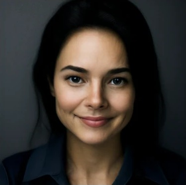
w = 7
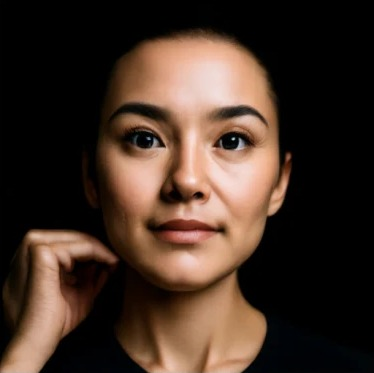
w = 7
w = 7
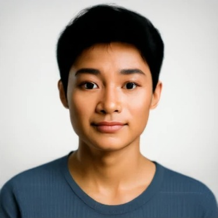
w = 7
Every sample is now a clean, sharp headshot, and the warped faces from 1.6 are gone. The cost is diversity. All five are front-facing close-ups on a plain studio background, where 1.6 had different poses, framing and lighting. The noise still sets the rough layout, like the raised hand in seed 182. Guidance trades variety for quality by pulling every sample toward the most typical "high quality photo".
To edit a photo, I add noise up to a start time with interpolate and then
run the CFG Euler sampler back to t = 1 with "a high quality photo". A low start time
means more noise, so the model has more freedom to change the image. All edits use the
same noise (seed 180), h = 0.02 and w = 7.
def edit(image, noise, t_start, condition, predict_velocity, w=7, step_size=0.02):
x_start = interpolate(image, noise, t_start)
def velocity(x, t):
return cfg_velocity(x, t, condition, w, predict_velocity, null_condition)
final, _ = euler_sample(x_start, t_start, step_size, velocity)
return final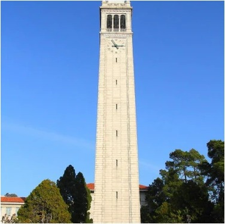
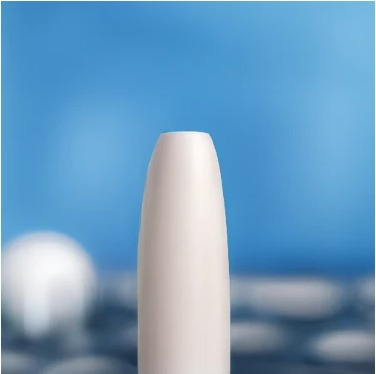
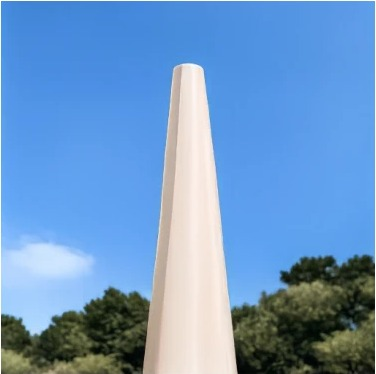
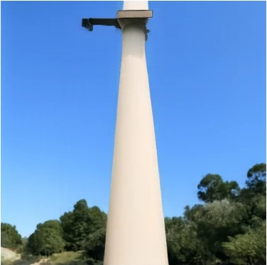
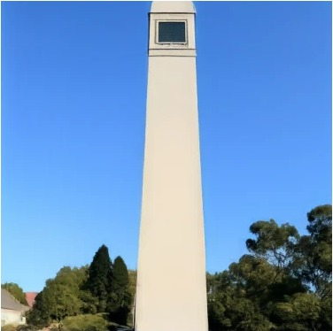
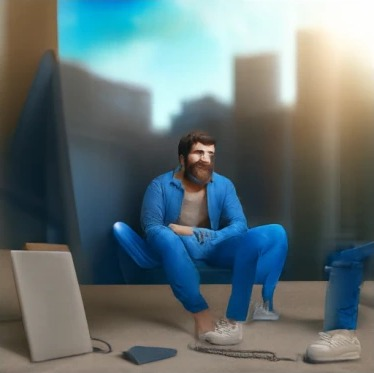
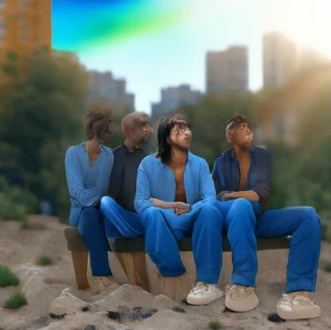
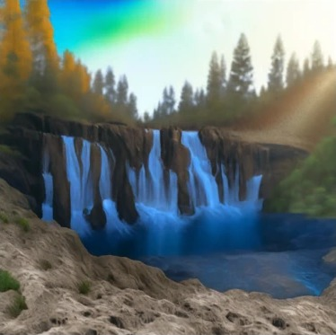
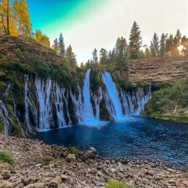
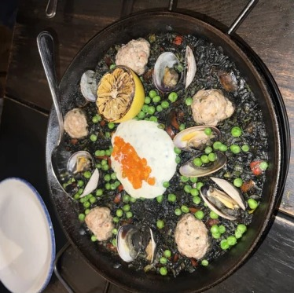
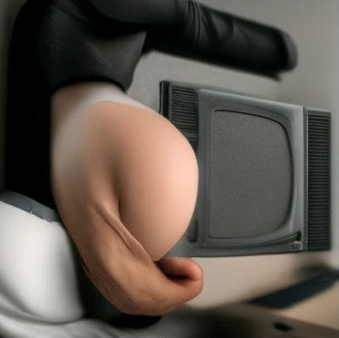
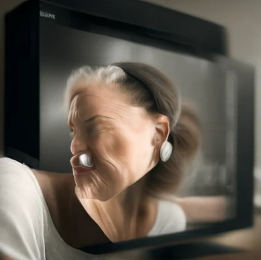
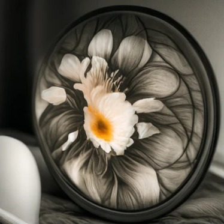
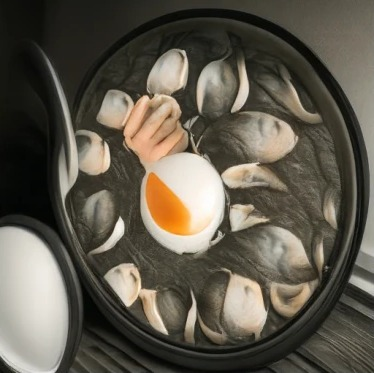
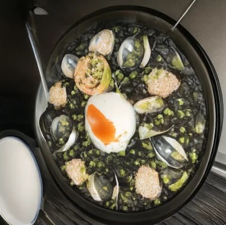
At the lowest start times almost nothing of the input survives except its rough colors. The waterfall and the paella both turn into people, the same bias seen in 1.6, while the Campanile becomes a plain white tower against blue sky. As the start time rises the original comes back in stages. First the layout returns, like the waterfall cliff at 0.14 or the round pan at 0.10, then the objects, and finally the fine detail. By 0.50 each edit is a slightly cleaned up copy of the input. The middle times give the most interesting edits, like the paella turning into a flower at 0.10 and into clam shells around an egg at 0.14.
The same editing procedure works on images that aren't photos. With "a high quality photo" as the prompt, the model tries to pull each input toward a realistic photo.
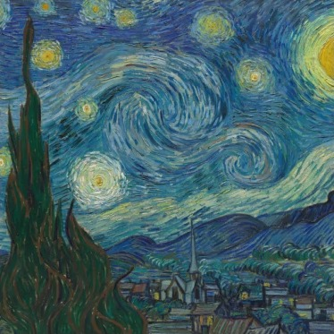
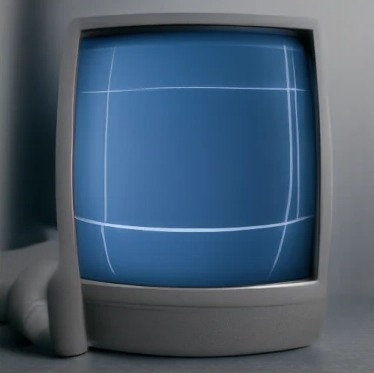
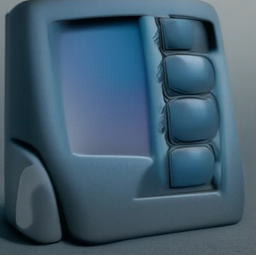
At low start times the blue becomes the screen of a computer or a gadget. Around 0.14 the bright stars come back as soft glowing circles, and at 0.25 the swirls return as a smooth, blurry version of the painting. By 0.50 it stays a painting with brush strokes instead of turning into a photo.
For this one I painted lava, a lake and a boat on top of a real photo, trying to recreate the stroke editing examples from the SDEdit paper. It didn't really work. The flat blue area I painted never becomes water. At low start times the model treats it as a graphic, a poster or web page full of fake text. From 0.06 to 0.14 the mountain turns into a realistic snowy peak, while my brown boat becomes a stamp and then the bust of a person. At 0.25 the lava strokes become red rock on the mountain, and at 0.50 the drawing is barely changed.
The flat gray and blue shapes become plastic tech objects at low start times, a camera, a blue gadget and a blue car. At 0.10 a blurry landscape appears, and from 0.14 to 0.25 the lake and snowy peaks stay with added grass texture and shading. It never becomes a real photo. By the start times where my layout survives, the flat colors survive too, so the result stays a drawing.
This is the same editing procedure as 3.1, with the same noise and start times, but the generic prompt is replaced by one describing the edit I want.
At low start times the tower becomes a literal pencil building with a sharpened tip. From 0.10 to 0.14 it keeps the Campanile's shape and belfry window but takes on pencil colors, with a wood-colored base and faceted sides. At 0.25 only faint vertical lines are left.
This one works at every start time, because the prompt keeps the scene and only changes the season. At 0.10 and 0.14 the falls turn to icicles and the rocks get snow, while the cliff, the pool, the teal sky and even the autumn trees stay from my photo. At 0.25 the frost is light and the water is still flowing.
My favorite. At 0.02 it's a generic galaxy, but from 0.04 the egg in the center becomes a striped planet. By 0.10 the round pan becomes a circular frame of planets, and at 0.14 and 0.25 each topping turns into its own planet while the pan, spoon and black rice (now a starry sky) stay in place.
Compared with 3.1, the low start times now follow the prompt instead of turning everything into a portrait. The tradeoff is the same though. Low start times match the prompt but lose the original, and high start times keep the original but ignore the prompt. The best edits are in between, around 0.10 to 0.25, where both the prompt and the structure show up.
A visual anagram looks like one thing upright and another when rotated 180°. At every Euler step I get the CFG velocity for prompt a on the image, and the velocity for prompt b on the rotated image, rotated back. Averaging the two pushes the image toward a picture that works both ways. Both prompts share the same style so the two readings can blend.
def visual_anagrams(noise, condition_a, condition_b, predict_velocity, w=7, step_size=0.02):
def velocity(x, t):
v1 = cfg_velocity(x, t, condition_a, w, predict_velocity, null_condition)
v2 = rotate180(cfg_velocity(rotate180(x), t, condition_b, w, predict_velocity, null_condition))
return (v1 + v2) / 2
final, _ = euler_sample(noise, 0, step_size, velocity)
return finalan oil painting of a jellyfish
an oil painting of a bowl of ramen
This one works both ways. Upright, the blue bell sits on top with orange tentacles hanging down. Flipped, the bell becomes a blue bowl and the tentacles become noodles piled on top. The shapes match under the rotation, so neither prompt has to give much up.
an oil painting of a stadium full of cheering fans
an oil painting of a soccer player in a light blue and white striped jersey
My tribute to Messi. Rotated, it's clearly a player in Argentina stripes with a crowd behind him. Upright, the stands, field and fans read as a stadium, but the upside-down face in the middle is still easy to spot, so the stadium view only half works. A face is a strong structured subject, and the crowd bends around it instead of hiding it.
Like the hybrids in Project 02, but generated instead of combined from two photos. At every Euler step I take the CFG velocity for both prompts on the same image, keep the low frequencies of the far prompt and the high frequencies of the close one. The low-pass is a Gaussian blur with σ = 16 (kernel 265). Up close you see the texture of prompt b, and from far away only the coarse shape of prompt a is left.
def make_hybrids(noise, condition_a, condition_b, predict_velocity, w=7, step_size=0.02):
def velocity(x, t):
v1 = cfg_velocity(x, t, condition_a, w, predict_velocity, null_condition)
v2 = cfg_velocity(x, t, condition_b, w, predict_velocity, null_condition)
return lowpass(v1) + (v2 - lowpass(v2))
final, _ = euler_sample(noise, 0, step_size, velocity)
return finalUp close it's a lithograph of tall grass. From far away the orange mass and its rounded, darker top read as a lion's mane. The face itself never shows up, but the color and outline are enough to suggest a lion.
Up close it's a clean forest engraving. From far away the forest sits in an oval head shape with two pointed tips at the top like ear tufts. I hoped the big eyes would show up as dark circles, but only the outline made it through, so this one is weaker.
My first two pairs only showed the close prompt at any size. A Gaussian with σ = 16 keeps only shapes around 100 pixels and larger, so the far prompt can only contribute a rough silhouette. A hand is defined by its fingers and a panda by its eye patches and ears, and all of those are thinner than that. The bamboo also came out green, and since color is low frequency it took over the far view too. Subjects with big bold features, like a mane or a head outline, work much better.